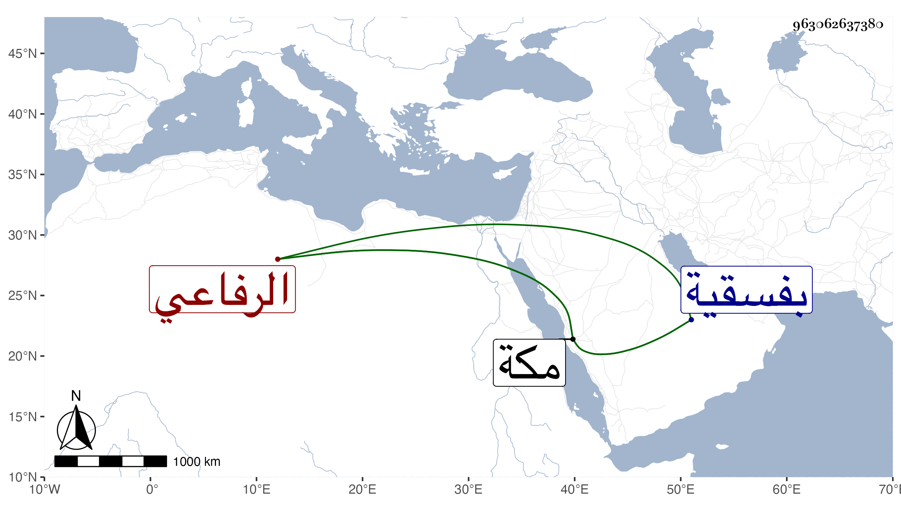

0902Sakhawi.DawLamic.ITO20230111-ara1.EIS1600.963062637380
Biography ID: 963062637380
480
عائشة ابنة علي بن عبد الله بن عطية الرفاعي وتعرف بالظاهرية . أنشأت رباطا بأسفل مكة يعرف بها ووقفت عليه دارا بباب الصفا مطلة على المسجد صارت بعد لإبراهيم ابن أخي ابن الزمن وكانت قائمة بالمشيخة على وجهها بينهن من تسبيح وأوراد وذكر واجتماعية لذلك في كل سبت وإطعام بحيث لم تخلف مثلها في مجموعة ، وماتت بمكة في جمادى الأولى سنة سبع وثلاثين ودفنت بفسقية من رباطها أعدتها لنفسها . أرخها ابن فهد .
